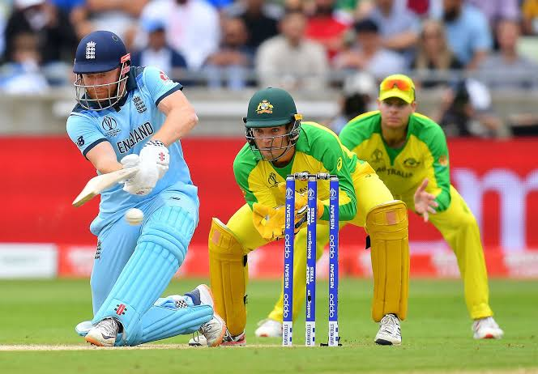

CricketOS: The Gentlemen's OS
Introduction
Welcome to Cricket OS, the smart and immersive operating system designed for every cricket lover. Built to bring fans, players, and teams closer to the game, Cricket OS combines real-time updates, match insights, player analytics, and a seamless digital experience in one powerful platform. Whether you’re tracking live scores, following your favorite players, or staying connected to the cricket world, Cricket OS makes every moment of the game more exciting, engaging, and unforgettable.
Key Features
- Live match updates and instant score tracking
- Player stats, performance insights, and team analysis
- Personalized cricket dashboard for fans and players
- Easy access to schedules, highlights, and news
- Fast, simple, and engaging experience for every cricket enthusiast

Cricket Scores